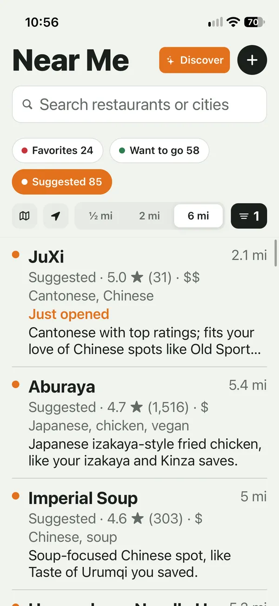
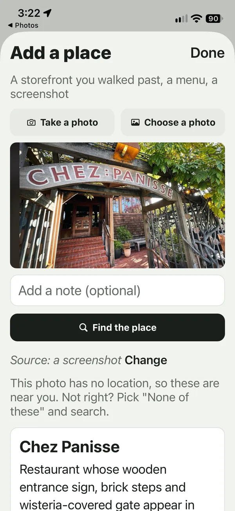
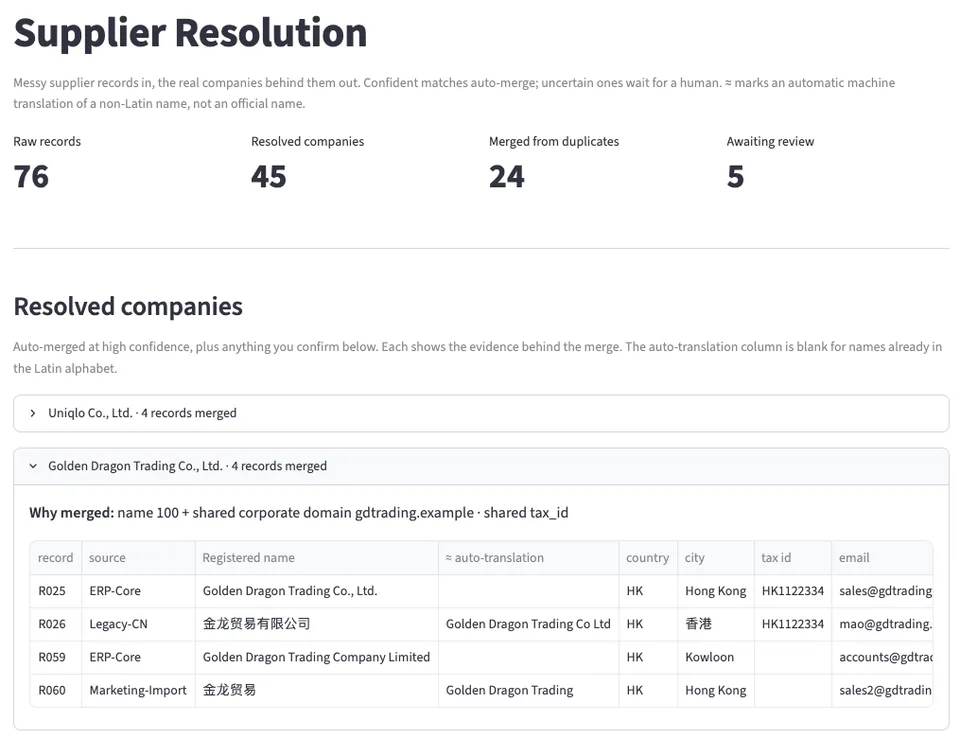
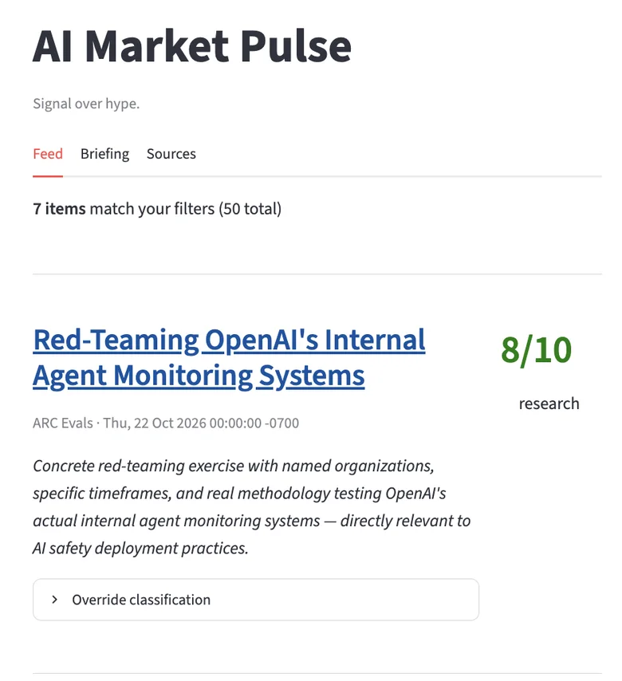
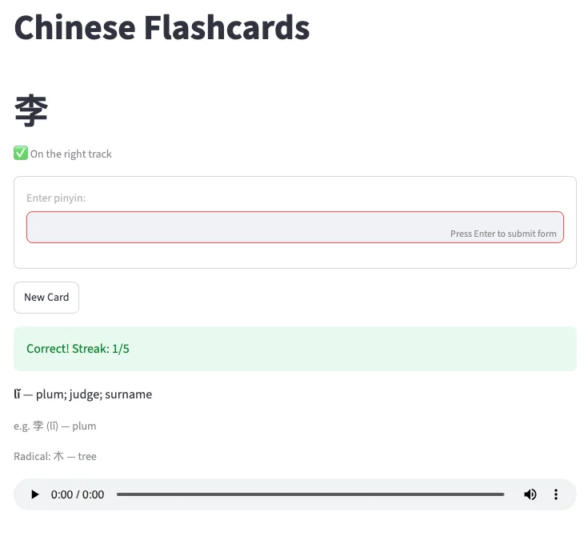

Martin Strell
Product manager in Alameda, California. I started as a software engineer and I still build things. Here are the recent ones.
I'm looking for a senior product role at an AI or B2B platform company.
Projects
-
Nosh Next
An app that finds restaurants matching your taste, near wherever you are. Save places from links, posts, screenshots and photos; diets are treated as rules. On the App Store for iPhone; Android is in testing.
I designed and built it: the app, the server and the AI that reads links, photos and bills.



-
Supplier Resolver
Groups messy supplier records into the real companies behind them. Entity resolution, the problem at the center of my supplier onboarding work at Infor Nexus.

-
AI Market Pulse
A dashboard that classifies news into market signals.

Hosted free; it may take a minute to wake up.
-
Adaptive Chinese Flashcards
Mandarin flashcards that adjust to what you get wrong.

Hosted free; it may take a minute to wake up.